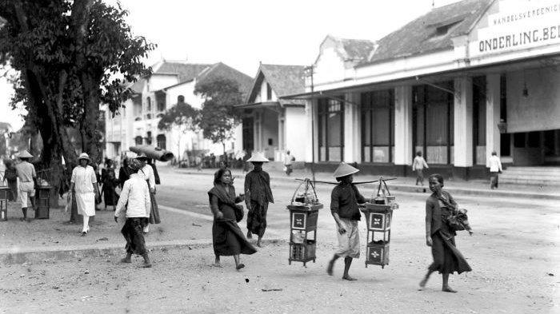
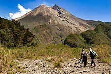
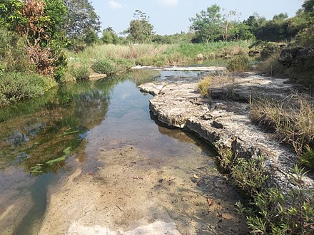

Sejarah

Daerah Istimewa Yogyakarta atau biasa disingkat dengan DIY adalah salah satu daerah otonom setingkat provinsi yang ada di Indonesia. Propinsi ini beribukota di Yogyakarta. Dari nama daerah ini yaitu Daerah Istimewa Yogyakarta sekaligus statusnya sebagai Daerah Istimewa. Status sebagai Daerah Istimewa berkenaan dengan runutan sejarah berdirinya propinsi ini, baik sebelum maupun sesudah Proklamasi Kemerdekaan Republik Indonesia. Menurut Babad Gianti, Yogyakarta atau Ngayogyakarta (bahasa Jawa) adalah nama yang diberikan Paku Buwono II (raja Mataram tahun 1719-1727) sebagai pengganti nama pesanggrahan Gartitawati.
Yogyakarta berarti Yogya yang kerta, Yogya yang makmur, sedangkan Ngayogyakarta Hadiningrat berarti Yogya yang makmur dan yang paling utama. Sumber lain mengatakan, nama Yogyakarta diambil dari nama (ibu) kota Sanskrit Ayodhya dalam epos Ramayana. Dalam penggunaannya sehari-hari, Yogyakarta lazim diucapkan Jogja(karta) atau Ngayogyakarta (bahasa Jawa). Sebelum Indonesia merdeka, Yogyakarta sudah mempunyai tradisi pemerintahan karena Yogyakarta adalah Kasultanan, termasuk di dalamnya terdapat juga Kadipaten Pakualaman. Daerah yang mempunyai asal-usul dengan pemerintahannya sendiri, di jaman penjajahan Hindia Belanda disebut Zelfbesturende Landschappen. Di jaman kemerdekaan disebut dengan nama Daerah Swapraja. Kasultanan Ngayogyakarta Hadiningrat berdiri sejak 1755 didirikan oleh Pangeran Mangkubumi yang kemudian bergelar Sultan Hamengku Buwono I. Kadipaten Pakualaman, berdiri sejak 1813, didirikan oleh Pangeran Notokusumo, (saudara Sultan Hamengku Buwono II ) kemudian bergelar Adipati Paku Alam I. Baik Kasultanan maupun Pakualaman, diakui oleh Pemerintah Hindia Belanda sebagai kerajaan dengan hak mengatur rumah tangga sendiri.
Geografis

DIY terletak di bagian tengah-selatan Pulau Jawa, secara geografis terletak pada 8º 30'–7º 20' Lintang Selatan, dan 109º 40'–111º 0' Bujur Timur. Berdasarkan bentang alam, wilayah DIY dapat dikelompokkan menjadi empat satuan fisiografi, yaitu satuan fisiografi Gunungapi Merapi, satuan fisiografi Pegunungan Sewu atau Pegunungan Seribu, satuan fisiografi Pegunungan Kulon Progo, dan satuan fisiografi Dataran Rendah.
Satuan fisiografi Gunungapi Merapi, yang terbentang mulai dari kerucut gunung api hingga dataran fluvial gunung api termasuk juga bentang lahan vulkanik, meliputi Sleman, Kota Yogyakarta dan sebagian Bantul. Daerah kerucut, dan lereng gunung api merupakan daerah hutan lindung sebagai kawasan resapan air daerah bawahan. Satuan bentang alam ini terletak di Sleman bagian utara. Gunung Merapi yang merupakan gunungapi aktif dengan karakteristik khusus, mempunyai daya tarik sebagai objek penelitian, pendidikan, dan pariwisata.

Satuan Pegunungan Selatan atau Pegunungan Seribu, yang terletak di wilayah Gunungkidul, merupakan kawasan perbukitan batu gamping dan bentang alam karst yang tandus, dan kekurangan air permukaan, dengan bagian tengah merupakan cekungan Wonosari yang telah mengalami pengangkatan secara tektonik sehingga terbentuk menjadi Plato Wonosari (dataran tinggi Wonosari). Satuan ini merupakan bentang alam hasil proses solusional (pelarutan), dengan bahan induk batu gamping, dan mempunyai karakteristik lapisan tanah dangkal, dan vegetasi penutup sangat jarang.
Satuan Pegunungan Kulon Progo, yang terletak di Kulon Progo bagian utara, merupakan bentang lahan struktural denudasional dengan topografi berbukit, kemiringan lereng curam, dan potensi air tanah kecil.
Satuan Dataran Rendah, merupakan bentang lahan fluvial (hasil proses pengendapan sungai) yang didominasi oleh dataran aluvial, membentang di bagian selatan DIY, mulai dari Kulon Progo sampai Bantul yang berbatasan dengan Pegunungan Seribu. Satuan ini merupakan daerah yang subur. Termasuk dalam satuan ini adalah bentang lahan marin dan eolin yang belum didayagunakan, merupakan wilayah pantai yang terbentang dari Kulon Progo sampai Bantul. Khusus bentang lahan marin dan eolin di Parangtritis Bantul, yang terkenal dengan gumuk pasirnya, merupakan laboratorium alam untuk kajian bentang alam pantai.
Sosial Budaya

Kondisi sosial budaya di Daerah Istimewa Yogyakarta antara lain meliputi Kependudukan dan Tenaga Kerja; Kesejahteraan Sosial dan Kesehatan; Pendidikan
Kependudukan dan Tenaga Kerja
Sebagai salah satu aspek yang penting dalam kehidupan, pembangunan kesehatan menjadi salah satu instrumen di dalam upaya peningkatan kesejahteraan masyarakat. Tahun 2007 jumlah keluarga miskin sebanyak 275.110 RTM dan menerima bantuan raskin dari pemerintah pusat (meningkat 27 persen dibanding periode tahun 2006 sebanyak 216.536 RTM). Penduduk DIY menurut tahapan kesejahteraan tercatat bahwa pada tahun 2007 kelompok pra sejahtera 21,12%; Sejahtera I 22,70%; Sejahtera II 23,69%; Sejahtera III 26,83%; dan Sejahtera III plus 5,66%. Tingkat kesejahteraan pada tahun 2010 meningkat dengan penurunan persentase penduduk miskin menjadi 16,83%.
Proporsi distribusi peduduk berdasarkan usia produktif memiliki akibat pada sektor tenaga kerja. Angkatan kerja di DIY pada 2010 sebesar 71,41%. Di sektor ekonomi yang menyerap tenaga kerja paling besar adalah sektor pertanian kemudian disusul sektor jasa-jasa lainnya. Sektor yang potensial dikembangkan yaitu sektor pariwisata, sektor perdagangan, dan industri terutama industri kecil menengah serta kerajinan. Pengangguran di DIY menjadi problematika sosial yang cukup serius karena karakter pengangguran DIY menyangkut sebagian tenaga-tenaga profesional dengan tingkat pendidikan tinggi.
Kesejahteraan Sosial dan Kesehatan
Memiliki beberapa teleskop, antara lain, Refraktor Ganda Zeiss, Schmidt Bimasakti, Refraktor Bamberg, Cassegrain GOTO, dan Teleskop Surya. Refraktor Ganda Zeiss adalah jenis teleskop terbesar untuk meneropong bintang. Benda ini diletakkan pada atap kubah sehingga saat teropong digunakan, atap tersebut harus dibuka. Observatorium Bosscha boleh dikunjungi oleh siapapun, tanpa tiket. Namun, bagi yang ingin menggunakan teleskop Zeiss, wajib mendaftarkan diri. Untuk instansi atau lembaga pendidikan, diberikan jadwal hari Selasa sampai Jumat. Sementara itu, kunjungan individu dibuka setiap hari Sabtu.
Arah pembangunan kesehatan di DIY secara umum adalah untuk mewujudkan DIY yang memiliki status kesehatan masyarakat yang tinggi tidak hanya dalam batas nasional tetapi memiliki kesetaraan di tataran internasional khususnya Asia Tenggara dengan mempertinggi kesadaran masyarakat akan pentingnya hidup sehat, peningkatan jangkauan, dan kualitas pelayanan kesehatan serta menjadikan DIY sebagai pusat mutu dalam pelayanan kesehatan, pendidikan pelatihan kesehatan serta konsultasi kesehatan. Hasil Riset Kesehatan Dasar Nasional Tahun 2010 menempatkan DIY sebagai daerah setingkat provinsi dengan indikator kesehatan terbaik, dan paling siap dalam mencapai MDG's.
Pendidikan
Penyebaran sekolah untuk jenjang SD/MI sampai Sekolah Menengah sudah merata, dan menjangkau seluruh wilayah sampai ke pelosok desa. Jumlah SD/MI yang ada di DIY pada tahun 2008 adalah sejumlah 2.035, SMP/MTs/SMP Terbuka sejumlah 529, dan SMA/MA/SMK sejumlah 381 sekolah negeri maupun swasta. Ketersediaan ruang belajar dapat dikatakan sudah memadai dengan rasio siswa per kelas untuk SD/MI: 22, SMP/MTs: 33, SMA/MA/SMK: 31. Sedangkan tingkat ketersediaan guru di DIY juga cukup memadai dengan rasio siswa per guru untuk SD/MI: 13, SMP/MTs: 11, SMA/MA/SMK: 9. Untuk tahun 2010 pembinaan guru jenjang SD/MI sebanyak 3.900 guru telah memenuhi kualifikasi dari total 24.093 guru. Jenjang SMP/MTs sebanyak 3.939 guru telah memenuhi kualifikasi dari total 12.971 guru. Dan untuk SMA/MA sebanyak 4.826 guru telah memenuhi kualifikasi dari total 15.067 guru.
Para lulusan jenjang SD/MI pada umumnya dapat melanjutkan ke SMP/MTs, sejalan kebijakan Wajib Belajar Pendidikan Dasar 9 Tahun yang dicanangkan pemerintah. Pada tahun 2010, angka kelulusan SD/MI mencapai 96,47%, SMP/MTs mencapai 81,84% dan SMA/MA/SMK sebesar 88,98%. Sedangkan angka putus sekolah pada tahun yang sama sebesar 0,07% untuk SD/MI; 0,17% untuk SMP/MTs; dan 0,44% untuk SMA/MA/SMK.[6] Sementara itu jumlah perguruan tinggi di DIY baik negeri, swasta maupun kedinasan seluruhnya sebanyak 136 institusi dengan rincian 21 universitas, 5 institut, 41 sekolah tinggi, 8 politeknik dan 61 akademi yang diasuh oleh 9.736 dosen. Itulah sebabnya Yogyakarta dikenal sebagai kota Pelajar.